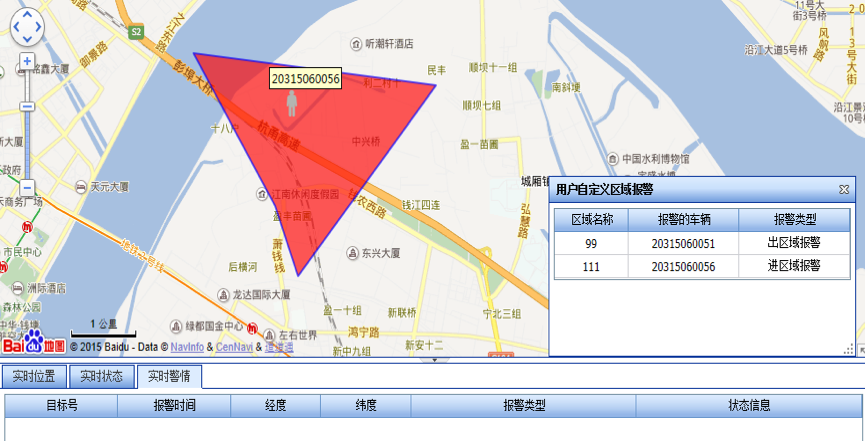

伴随着城市交通拥堵程度增加，越来越多的市民选择了电动车出行，伴随着电动车数量的逐年攀升，也暴露出了一系列的问题。
为提高公安在信息化条件下的社会治安驾驭能力，建设适应当代社会经济条件的电动车综合治理管控系统；为减少城市电动车盗窃案件数量，提高此类案件的侦破能力；为服务广大电动车车主，提高人民群众的安全感、方便度、满意度，非线公司在2015年投资建设了“驴宝宝”服务平台。
产品功能
所有用户在下载“驴宝宝”手机APP后，均可查询附近电动车设备安装点、维修站及充电站的位置、距离等基本信息，并提供导航功能。
用户在安装智能防盗仪后，可通过手机APP实现电动车定位、轨迹查询及防盗智能告警等功能。

电子围栏：支持用户自主设置电子围栏，通过地图拖拉出一块区域作为围栏，包含入围栏报警、出围栏报警、围栏内聚集报警。

产品优势
覆盖面积广
驴宝宝智能防盗仪具有实时的卫星定位追踪技术，采用移动通信技术实现数据传输，实现城市、农村全覆盖。
安全保障
实时获取车辆信息，定位精确提供全时段的出行记录及动态行驶轨迹。
与RFID模式对比
| 对比项 | 智能防盗仪 | RFID |
|---|---|---|
| 实施便捷性 | 电动车和智能盒接口式链接，不涉及其余配套建设，快捷方便，实现城市乡村全覆盖 | 需要配套建设RFID接收基站，工程量大，工期长（监控范围受基站建设限制） |
| 移动APP应用 | 具备移动APP，车主可以实时掌握爱车的位置 | 不具备 |
| 定位精确度 | ≤10米（2DRMS），实时获取车辆信息 | 只能获取电动车经过的基站的位置，无法实时获取电动车的位置，精确度差 |
| 电动车管控平台 | 提供电动车管控平台，可实时对接现有机动车管控平台获取治安卡口数据，实现跨警钟的“大治安”防盗方案 | 不具备连续实时监控 |
| 无线通讯模块 | 具备无线通讯模块，可实现远程控制终端 | 不具备 |
| 系统拓展性 | 基于GPS/北斗以及无线通讯功能，不但可实现本次项目防盗功能，更可为后期的治安管理、车辆管控提供基础环境，具备较高的系统拓展性（覆盖农村地区） | 只能实现基于基站位置的车辆定位获取 |
| 先进性 | 以GPS/北斗、无线通讯模块建成的智能防盗仪，不但是车联网的解决方案，更是互联网+的解决方案，技术先进，潮流领先。 | 基于传统的RFID技术，稳定性和干扰性制约明显 |
| 信号采集 | 无盲区采集，即使GPS/北斗卫星无法定位或者移动无信号，仍可获取位置 | 只能在基站有效距离接受电动车位置，其中RFID基站有效距离约为50米 |